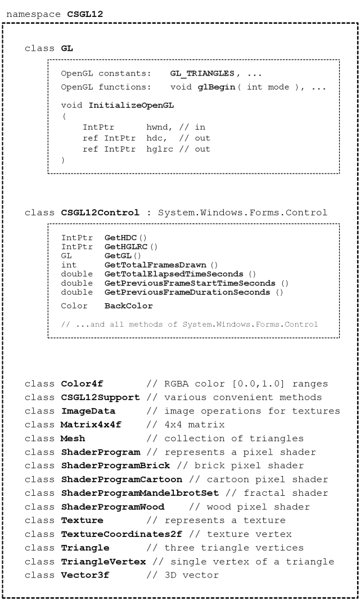
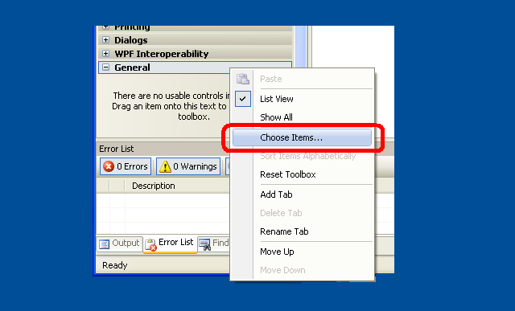

C# OpenGL интерфейс
Windows для операционной системы
Colin Fahey

CSGL12Control на Form, показывая «фрактальным» Pixel Shader программу и GDI+ рисунок копируется на текстуру

Два CSGL12Control случаев на Form, показывая Pixel Shader программ и текстурами

3D-аватар, что ходит на рабочем столе и могут быть перенесены с курсором
1. Программное обеспечение
Этот вариант этого документа должен быть включен в «CSGL12» программы. Если вы не можете найти программное обеспечение, то, пожалуйста, перейдите на следующий веб-сайт для загрузки программного обеспечения:
http://colinfahey.com.
2. Все эти C# компьютере код в C# OpenGL интерфейс (CSGL12) является «общественным достоянием»
Я написал все эти C# компьютера код в C# OpenGL интерфейса (CSGL12).
Я заявляю, все из C# компьютера код в C# OpenGL интерфейса (CSGL12) быть «в» свободном доступе.
Таким образом, компьютерная программа может быть использована в любых целях (коммерческих или частных), без оплаты, без каких-либо ограничений, без обязательств, и без признания автора.
Код может быть изменен или части повторного использования, без ограничений и без обязательств, и без признания автора.
Примером программы включают небольшое количество компьютерного кода (в частности, «shader компьютерный код), написанные другими людьми.» Такой код не входит в сам интерфейс и может быть легко удалена. Такой код просто продемонстрировать простоту использования интерфейс для создания и использования «shader» программ.
3. Введение
«CSGL12» представляет собой сборник C# компьютерные файлы код, реализующий интерфейс с OpenGL графической библиотеки (в том числе всех расширений OpenGL вплоть до 2007 года) на Windows операционной системы.
В C# компьютерных кодов файлов в «CSGL12» коллекции позволяют легко добавлять OpenGL опираясь на любую C# / .NET программного обеспечения с «Form» (один экземпляр «System.Windows.Forms.Form»).
В «CSGL12» коллекции компьютерных кодов файлов включает в себя файл с именем «CSGL12Control.cs», который определяет класс назван «CSGL12Control», полученных от «System.Windows.Forms.Control». Каждый экземпляр «CSGL12Control» является независимым OpenGL рисунок области. Это очень легко добавить несколько случаев CSGL12Control к Form (один экземпляр System.Windows.Forms.Form).
4. Технические характеристики и требования «CSGL12»
Код Windows только для операционных систем, которые поддерживают .NET 2.0 Framework (Windows 2000, Windows XP, Windows Vista, Windows 7)
Код может быть составлен с использованием «Microsoft Visual C# 2008 Express Edition» (бесплатный компилятора), или аналогичные C# компиляторы.
Кодекс требует, строятся с «[X] Allow unsafe code» построить выбранного варианта оптимизированы таким образом, что данные функции копирования может быть использован. Если вы являетесь экспертом C# программист вы сможете легко определить элементы C# кода, которые требуют «unsafe» вариант, и отключить их, при желании или необходимости. Image копирования данных в 10 раз быстрее, используя «unsafe» код по сравнению с альтернативой, и именно поэтому такой код используется. Если построить DLL, которая содержит все эти «unsafe» код, то проект, который использует эту DLL не требует строится с «unsafe» вариант, и поэтому можно сделать вывод о том, что отсутствие в «unsafe» вариант проекта не предполагает каких-либо дополнительных безопасности (DLL так много файлов, которые используются прямо или косвенно в программе содержат «небезопасный» код).
Код может быть собрана и использоваться любой из следующих характеристик:
Microsoft Visual C# 2008 Express Edition
Microsoft Visual Studio 2008
Microsoft .NET 3.5 SDK
SharpDevelop
Mono Project
Кодекс предоставляет самые OpenGL расширениями (через год 2007), в том числе «vertex shaders» и «pixel shaders».
Кодекс предусматривает 1570 функции, связанные с OpenGL:
336 GL functions
51 GLU functions
19 WGL functions
1164 extensions
Кодекс предлагает некоторые альтернативные варианты в 1570 функций с различными параметрами типов, для удобства.
Кодекс определяет более 3244 константы OpenGL.
Кодекс дает возможность иметь несколько OpenGL рисунок контекстах, все оживляющий независимо от каких-либо «Form».
Нажав на «CSGL12Control» дает ему «фокус ввода,» что позволяет последующее клавиатуры и мыши колесо ввода. Курсор кликов и движений, полученные, когда курсор находится в пределах прямоугольной области экземпляр «CSGL12Control».
Код включать функции, чтобы продемонстрировать, каким образом сделать некоторые общие OpenGL задач в C# и .NET.
В кодексе перечислены все OpenGL констант и функций, в алфавитном порядке, в «class GL» в «GL.cs», делая его легко определить, если какой-либо постоянной или функция отсутствует (что маловероятно, за исключением расширений принял после года 2007).
В качестве примера программ, показывают, как сделать GDI+ рисунок на Bitmap, а затем, как скопировать, что Bitmap к OpenGL текстуры.
Это позволяет текст и другие GDI+ используя возможности внести свой вклад в OpenGL арене.
GDI+ Bitmap могут быть обновлены и загружаются в OpenGL текстуры так часто, как раз в OpenGL кадра.
В качестве примера программ, показывает, как выбрать из нескольких разных «pixel shader programs» во время работы программы.
В качестве примера программ, показывает, как писать OpenGL буфера графических файлов (JPG, BMP, GIF, PNG).
Пресс Shift + 0 (Shift-ноль), чтобы написать о OpenGL буфера графических файлов.
Данный пример кода показывает, как составление «GL.cs» в DLL один файл, а затем добавил, что DLL файл на другой проект, может предотвратить Microsoft код редакторов (например, Microsoft Visual C# 2008 Express Edition и т.д.) с «IntelliSense» (контекстно-зависимая код завершения) становились часто и настойчиво неотвечающих (неоднократно паузы для многих секунд, делая совершенно непригодными для использования редактора). Имея файл «GL.cs» непосредственно включаются в любой проект, отредактированный в Microsoft код редактор не является практичным, если человек не желает мириться с медлительностью редактора. Эта проблема затронула Microsoft Visual Studio 2003, 2005, 2008, и, вероятно, повлияет на 2010 версия тоже.
Данный пример кода демонстрирует использование нескольких экземпляров «CSGL12Control» на «Form».
Пример кода включает в себя код сделать 3D «аватара,» что ходит на столе Windows.
5. Примеры программ, включенных в «CSGL12»
5.1 «CSGL12DLL»
Проект назван «CSGL12DLL» производит DLL файл с именем «CSGL12DLL.dll» в котором содержится «class GL» (определены в C# файл «GL.cs»).
Ввод в «class GL» к DLL файл, а затем, используя DLL, что в других проектах, которые используют «class GL», помогает избежать экстремальных проблема со всеми Microsoft код редакторов с IntelliSense особенность. Использование C# файл GL.cs непосредственно в проекте, приведет к какой-либо Microsoft код редактор с функцией IntelliSense стать совершенно не отвечает и не может использоваться практически непрерывно в связи с неэффективностью в IntelliSense функции (а также тот факт, что, очевидно IntelliSense блоки основной программы нить редактор ).
Если вы используете C# редактора кода, которые не производятся в Microsoft (например, «SharpDevelop», «MonoDevelop» и т.д.), то вы можете просто включить в файл «GL.cs» прямо в ваши проекты, и вы вряд ли получить какую-либо выгоду от использования «CSGL12DLL.dll».
5.2 «CSGL12Control»
Проект назван «CSGL12Control» производит DLL файл с именем «CSGL12Control.dll» в котором содержится «class CSGL12Control» (определены в C# файл «CSGL12Control.cs»).
Ввод в «class CSGL12Control» к DLL файл, что позволяет «Control» (например, сорта, полученные от «System.Windows.Forms.Control»), которые будут добавлены к «Toolbox» из Microsoft Visual C# 2008 Express Edition (и аналогичных C# редакторы). После «CSGL12Control» в «Toolbox» позволяет легко для того, чтобы добавить один экземпляр «CSGL12Control» к «Form» в «Designer» (например, человек может просто использовать курсор, чтобы выбрать и переместить один экземпляр «CSGL12Control» из «Toolbox» к «Form»).
В «CSGL12Control» объектом управляет один OpenGL чертеж контексте. Многочисленные случаи «CSGL12Control» могут сосуществовать на «Form».
5.3 «CSGL12Example1»
Проект назван «CSGL12Example1» создает исполняемый файл программы (EXE) под названием «CSGL12Example1.exe». Программа использует «CSGL12DLL.dll» и «CSGL12Control.dll» отображать один экземпляр CSGL12Control и проводится с использованием OpenGL куб.
Программа демонстрирует использование четырех различных «pixel shaders» «(фрактально, кирпича, дерева,» а также «мультфильм).»
Программа также показывает использование «GDI+», а .NET чертеж библиотеку, чтобы сделать текст и другие формы с «Bitmap» объект («GDI+» объекта), а затем скопировать данные изображения из этой «Bitmap» на «texture» в OpenGL, тем самым позволяя изображение по «GDI+» появится в OpenGL рисунка. Эта возможность очень полезна, поскольку OpenGL не хватает многим из 2D рисунок особенности в «GDI+» и аналогичных 2D рисунок libaries.
5.4 «CSGL12Example2»
Проект назван «CSGL12Example2» создает исполняемый файл программы (EXE) под названием «CSGL12Example2.exe». Программа использует «CSGL12DLL.dll» и «CSGL12Control.dll» для отображения двух экземплярах CSGL12Control, каждый из которых проводится с использованием OpenGL куб.
Программа имеет «SplitContainer» «Control» на «Form». Каждая из этих двух областей, в «SplitContainer» содержит экземпляр CSGL12Control. Таким образом, человек может изменить позицию разделения между этими двумя случаями CSGL12Control. Это свидетельствует о гибкости в CSGL12Control.
Один из случаев CSGL12Control посылает события набор обработчиков событий в один экземпляр «CSGL12Example2Handler1.cs», которая использует один и тот же код, как «CSGL12Example1Handler.cs» в «CSGL12Example1» примере проекта. Таким образом, один из случаев CSGL12Control ничьих куба с одним выбранным «pixel shader» из четырех имеющихся «pixel shaders».
Другой экземпляр CSGL12Control посылает события набор обработчиков событий в один экземпляр «CSGL12Example2Handler2.cs», которая опирается куб, используя текстуру изображения (или «клетчатый» шаблон, если файл изображения с именем «image.jpg» не найдена).
5.5 «CSGL12Avatar»
Проект назван «CSGL12Avatar» создает исполняемый файл программы (EXE) под названием «CSGL12Avatar.exe». Программа использует «CSGL12DLL.dll» и «CSGL12Control.dll» провести куба с использованием OpenGL на «Form» без границ, с цветом основанные прозрачность включена, чтобы нарисовать 3D «аватара,» что ходит в Windows столе области.
Движущийся avatar можно нажали и тащили в новом месте с помощью курсора. Дважды нажав на avatar даст нуль. Несмотря на то, что код просто рисует куб, OpenGL могут быть использованы для разработки других вещей.
Несколько случаев из «аватара» программа может быть запущена. Таким образом, многие независимые «аватара» случаях может одновременно бродят по Windows стола. Это забавно. Эксперт C# программист может пользоваться поиском путей координации деятельности многих таких случаях «аватар.»
К сожалению, уровень, при котором объект Window с прозрачностью обновляется на экране гораздо медленнее, чем скорость, с которой OpenGL может нарисовать. В «аватара» только обновления 10 раз в секунду. Я не знаю, если это может быть улучшена.
5.6 «CSGL12BuiltExecutableExamplesForReference»
В каталоге с именем «CSGL12BuiltExecutableExamplesForReference» содержит DLL файлы и файлы, созданные EXE все примере проектов. Эти файлы предоставляются в качестве эталона, так что файлы можно проверить сразу, даже если лицо не имеет возможности для составления различных проектов, от предоставляемых C# код.
5.7 «CSGL12UsefulCode»
В каталоге с именем «CSGL12UsefulCode» содержит C# файлы, которые могут быть полезны для людей, которые хотят сделать рисунок обычным операциям с OpenGL. Справочник включает также DLL файлы «CSGL12DLL.dll» и «CSGL12Control.dll» для удобства.
Код в каталоге, что определяет различные class виды, такие, как Color4f, Vector3f, Matrix4x4f, Triangle, Mesh, ImageData, Texture, ShaderProgram и т.д. Код является достаточно эффективным, но этот код только вдохновлять людей на развитие их собственных реализаций.
6. CSGL12 файлы
В «CSGL12» коллекция C# компьютерных кодов включает в себя файлы, файлы показано на следующей диаграмме:

В «CSGL12» коллекция C# компьютерных кодов включает в себя файлы, файлы, показанные в этой схеме.
В «CSGL12» программное обеспечение также включает в себя проекты по созданию двух DLL файлы («CSGL12DLL.dll» и «CSGL12Control.dll») показано на диаграмме. Эти два DLL файлы могут быть созданы, чтобы сделать его более удобным для создания программ, использующих OpenGL, но можно также создавать программы, используя только C# файлы напрямую.
7. «namespace CSGL12» и «class» типов
В «CSGL12» коллекция C# компьютерные файлы код определяет «namespace CSGL12» и «class» типов показано на следующей диаграмме:

В «CSGL12» коллекция C# компьютерные файлы код определяет «namespace CSGL12» и «class» типов показано в этой схеме.
А программа, которая делает рисунок OpenGL могут быть созданы с использованием только «class GL» (с использованием C# файл GL.cs непосредственно, либо с помощью DLL файл CSGL12DLL.dll который также содержит «class GL»). Однако, используя «class CSGL12Control» (с помощью C# файл CSGL12Control.cs непосредственно, либо с помощью DLL файл CSGL12Control.dll который также содержит «class CSGL12Control») позволяет добавить OpenGL подходит к Form (System.Windows.Forms.Form) легко и удобно.
В C# классов Color4f, CSGL12Support, ImageData, ..., в нижней части диаграммы предоставляются только для удобства. Эти классы облегчают создание программ, привлечь, используя OpenGL. Однако, вы, возможно, уже есть классы, которые проводят операции в этих классах, или вы можете выбрать для создания аналогичных классов, которые выполняют операции по-разному и более эффективно. Эти занятия предлагаются в качестве примеров конкретного кода разработки и реализации.
8. Использование единого «CSGL12Control» на System.Windows.Forms.Form
8.1 Структура программы
Следующая диаграмма показывает, каким образом программа с System.Windows.Forms.Form можно использовать одну «CSGL12Control» сделать рисунок с OpenGL. На диаграмме показаны различные CSGL12 файлы, используемые для создания программы.

Программа, используя один «CSGL12Control» на System.Windows.Forms.Form
8.2 Использование Microsoft Visual C#, чтобы создать программу
(1) Начало Microsoft Visual C#.
(2) В меню выберите «File» -> «New Project...».
(3) В «New Project» диалоговое окно, которое появляется, выберите «Windows Forms Application», а также выбрать имя для участия в программе, и нажмите «OK».
(4) Немедленно сохраните «Solution», выбрав «File» -> «Save All». Откроется диалоговое окно с заголовком «Save Project» появится, что позволит вам установить название проекта, папки, а также «решение» название для проекта. Помните каталоге так, что вы готовы к следующей инструкции. Нажмите кнопку «Save» для сохранения данного проекта.
(5) Скопируйте все файлы из каталога «CSGL12UsefulCode» в «CSGL12» программное обеспечение в каталог, содержащий исходный код файлов нового проекта (например, каталогов, содержащих файлы «Form1.cs», «Form1.Designer.cs», «Program.cs» и т.д.), таким образом, чтобы файлы «CSGL12DLL.dll», «CSGL12Control.dll», «Color4f.cs» , «CSGL12Support.cs» и т.д., являются вместе с новым проектом «Form1.cs» файлы и т.д.
(6) В Microsoft Visual C# добавить «CSGL12» C# файлы проекта. В меню выберите «Project» -> «Add Existing Item...», и в «Add Existing Item» диалоговое окно, выберите все из C# файлы из CSGL12 программного обеспечения («Color4f.cs», «CSGL12Support.cs», «ImageData.cs», ...).
(7) В Microsoft Visual C#, добавить «ссылки» на DLL файлы «CSGL12DLL.dll» и «CSGL12Control.dll». В меню выберите «Project» -> «Add Reference...», и в «Add Reference» диалоговое окно, выберите вкладку «Browse» и выберите файл «CSGL12DLL.dll» и «CSGL12Control.dll» из проекта исходный файл каталога и нажмите «OK».
(8) В Microsoft Visual C# добавить «CSGL12Control» к «Toolbox». В меню выберите «Tools» -> «Choose Toolbox Items...». «Choose Toolbox Items» В диалоговом окне нажмите кнопку «Browse...», и перейти к проекту директории с файлами исходного кода и выберите «CSGL12Control.dll». Нажмите кнопку «OK».
(9) В Microsoft Visual C#, просмотреть «Toolbox». В меню выберите «View» -> «Toolbox». В «Toolbox», перейдите в раздел с именем «General», и найдите пункт назвали «CSGL12Control». С помощью курсора, выберите пункт назвали «CSGL12Control» и перетащить его на «Form» в «Design» зрения.
(10) В Microsoft Visual C# в «Form» «Design» точки зрения, перемещать «CSGL12Control» инстанции по «Form» и корректировать его ширины и высоты. В «Properties» панели, установите значение «Anchor» включить «Top, Bottom, Left, Right», если вы хотите контролировать изменение размеров в соответствии с изменениями в программе размер окна.
(11) В Microsoft Visual C#, изменение свойств проекта тем, что он может использовать код «unsafe». В меню выберите «Project» -> «[project] Properties...». Выберите в диалоговом окне, которое появляется, выберите закладку с именем «Build» и проверить флажок с именем «[X] Allow unsafe code». Закрыть проекта окно свойств.
(12) В Microsoft Visual C# добавить новый C# файл к проекту. В меню выберите «Project» -> «Add New Item...». В диалоговом окне с именем «Add New Item», выбрать шаблон с именем «Class», а также выбрать имя для нового класса типа, такие, как «CSGL12MyHandler.cs», а затем нажмите кнопку «Add». Посмотрите на примере проекта назвали «CSGL12Example1», в файле с именем «CSGL12Example1Handler.cs», в качестве примера того, как код «CSGL12MyHandler.cs» должна быть написана.
(13) В Microsoft Visual C# в «Solution Explorer», нажмите на «Form1». В меню выберите «View» -> «Code» (или нажмите F7, или щелкните правой кнопкой мыши на «Form1» и выбрать «View Code». Код в файл «Form1.cs» появится в редакторе. Изменить этот код в файл «Form1.cs» будет похож на код в файл «CSGL12Example1Form.cs» в проекте «CSGL12Example1» включена в «CSGL12» программное обеспечение. В частности, создать переменную для экземпляра вашего класса обработчика события (например, «CSGL12MyHandler»), а затем добавить методы этого класса, например в качестве обработчиков событий для различных событий экземпляр «CSGL12Control» на «Form».
(14) В Microsoft Visual C#, обобщать и запустите программу. Если вы хотите поделиться с программой, вы должны включать в себя два DLL файлы («CSGL12DLL.dll» и «CSGL12Control.dll») в исполняемый файл (*.exe).
Если вы являетесь экспертом C# программист, то вы можете избежать необходимости распределять DLL файлы («CSGL12DLL.dll» и «CSGL12Control.dll») с исполняемым (*.exe).
Скопируйте файлы «GL.cs», «CSGL12Control.cs» и «PrecisionTime.cs» из проектов назвал «CSGL12DLL» и «CSGL12Control» в «CSGL12» программного обеспечения на источник директории вашего текущего проекта. Добавить файлы «GL.cs», «CSGL12Control.cs» и «PrecisionTime.cs» для вашего проекта тем, что они составляются непосредственно в программе. У Вас нет ссылки на «CSGL12DLL.dll» и «CSGL12Control.dll» в проекте.
Посмотрите на «CSGL12Example1» проекта в «CSGL12» программного обеспечения, а также посмотреть на код в файл с именем «CSGL12Example1Form.cs» и «CSGL12Example1Form.Designer.cs», чтобы узнать, что код необходимо создать и инициализировать экземпляр «CSGL12Control» по «Form». Добавить аналогичный код «Form1.cs» и «Form1.Designer.cs» вручную создать и инициализировать экземпляр «CSGL12Control» на вашем «Form».
Эта процедура очень неудобно, и требует опыта и тщательного внимания, но в результате исполняемые (*.exe) не будет требовать «CSGL12DLL.dll» или «CSGL12Control.dll». Это очень приятно иметь возможность поделиться своим программным обеспечением в виде одного исполняемого файла (*.exe), не требующей других файлов.
8.3 Добавление «ссылки» на CSGL12DLL.dll и CSGL12Control.dll
Этот раздел включает в себя изображения, используя Microsoft Visual C# 2008 Express Edition чтобы добавить «ссылки» на DLL файлы CSGL12DLL.dll и CSGL12Control.dll к проекту.
В меню выберите «Project» -> «Add Reference...». Или щелкните правой кнопкой мыши по пункту «References» в «Solution Explorer» панели и выберите «Add Reference...», как показано на следующем изображении.

Контекстное меню для «References» пункта в «Solution Explorer», с указанием вариантов «Add Reference...»
После выбора варианта «Add Reference...», появляется диалоговое окно с именем «Add Reference» появится. В этом диалоговом окне выберите вкладку «Browse» и выберите DLL файлы «CSGL12DLL.dll» и «CSGL12Control.dll», как показано на следующем изображении, а затем нажмите кнопку «OK».

На вкладке «Browse» из «Add Reference» диалоговое окно с DLL файлы «CSGL12DLL.dll» и «CSGL12Control.dll» так выбрали
После нажатия на кнопку «OK» года «Add Reference» окно исчезнет, а DLL файлы «CSGL12DLL.dll» и «CSGL12Control.dll» появится в «References» филиал в «Solution Explorer», как показано на следующей диаграмме.

В DLL файлы «CSGL12DLL.dll» и «CSGL12Control.dll» в «References» филиал в «Solution Explorer»
8.4 Добавление CSGL12Control к Toolbox в Microsoft Visual C# 2008 Express Edition
Этот раздел включает в себя изображения, используя Microsoft Visual C# 2008 Express Edition добавить CSGL12Control к «Toolbox» тем, что человек может легко добавить случаи CSGL12Control к «Form» в «Designer» (Shift+F7 по умолчанию).
В меню выберите «View» -> «Toolbox». В «Toolbox», перейдите в раздел с именем «General», как показано на следующем изображении.

В разделе «General» из «Toolbox»
Щелкните правой кнопкой мыши в любом месте в пределах «Toolbox». Выберите опцию «Choose Items...» в контекстном меню, которое появляется, как показано на следующем изображении.

Опция «Choose Items...» в контекстном меню для «Toolbox»
Кроме того, в меню выберите выберите «Tools» -> «Choose Toolbox Items...».
В «Choose Toolbox Items» окне должны появиться, как показано на следующем изображении.

В диалоговом окне «Choose Toolbox Items»
«Choose Toolbox Items» В диалоговом окне нажмите кнопку «Browse». В «Open» диалоговое окно, которое появляется, выберите DLL файл «CSGL12Control.dll», как показано на следующем изображении, а затем нажмите кнопку «OK».

В «Open» диалоге с DLL файл «CSGL12Control.dll» выбрали
В «CSGL12Control» пункт должен появиться в «Choose Toolbox Items» диалоговое окно, как показано на следующем изображении. Нажмите кнопку «OK».

В «CSGL12Control» пункт появляется в диалоговом окне «Choose Toolbox Items»
В «CSGL12Control» пункт должен появиться в «Toolbox», как показано на следующем изображении.

В «CSGL12Control» пункт появляется в «Toolbox»
8.5 Добавление CSGL12Control к «Form» с помощью «Toolbox»
Этот раздел включает в себя изображения, используя Microsoft Visual C# 2008 Express Edition добавить экземпляр CSGL12Control к «Form» с помощью «Toolbox».
В меню выберите «View» -> «Designer» (Shift+F7 по умолчанию). Или дважды щелкните файл «Form*.cs» в «Solution Explorer». Или щелкните правой кнопкой мыши на файл «Form*.cs» в «Solution Explorer» и выберите «View Designer». Использование одного из этих трех методов, «Designer» окно для «Form» должен появиться.
В меню выберите «View» -> «Toolbox». В «Toolbox», перейдите в раздел с именем «General». Пункт назвал «CSGL12Control» должна появиться там, как показано на следующем изображении.
В «CSGL12Control» уже должны быть в «Toolbox»
С помощью курсора, выберите пункт назвали «CSGL12Control» и перетащить его на «Form» в «Designer». Экземпляр «CSGL12Control» должны появиться на «Form», как показано на следующем изображении.

Экземпляр «CSGL12Control» на «Form» в «Designer»
В «Form» «Designer» мнение, переместить экземпляр «CSGL12Control» на «Form» и корректировать его ширины и высоты.
Щелкните по экземпляру «CSGL12Control» на «Form» для его выбора. Затем, в «Properties» панели, установите значение «Anchor» включить «Top, Bottom, Left, Right» тем, что численный состав «CSGL12Control» будет меняться в связи с изменениями в программе размер окна. Возможно, вы захотите изменить имя переменной (например, значение для «(Name)») за экземпляр «CSGL12Control» от автоматических умолчанию (например, «csgL12Control») к чему-то подходит для вашего кода (например, «mCSGL12Control» или «mCSGL12Control1» и т.д.).
Ниже показано изображение «Form» «Designer» вид и «Properties» панели.

Экземпляр CSGL12Control на Form в Designer и «Properties панели
9. Использование двух экземплярах «CSGL12Control» на System.Windows.Forms.Form
Следующая диаграмма показывает пример того, как в двух случаях из «CSGL12Control» могут быть добавлены к System.Windows.Forms.Form сделать рисунок с OpenGL в программе.

Программа, с помощью двух экземплярах «CSGL12Control» на System.Windows.Forms.Form
Следуйте инструкциям в предыдущем разделе, чтобы добавить в одном экземпляре «CSGL12Control» к «Form». Затем просто перетащите второй экземпляр «CSGL12Control» из «Toolbox» к «Form» добавить вторую «CSGL12Control».
Каждый экземпляр «CSGL12Control» будет иметь свое собственное имя переменной. Каждый экземпляр «CSGL12Control» может иметь свои собственные мероприятия, связанные обработчик класса, или он может использовать отдельные случаи какого-либо одного обработчика класса типа.
Исследование на примере проекта «CSGL12Example2», чтобы узнать, как в двух случаях «CSGL12Control» может иметь свои мероприятия направлены две отдельные случаи обычай события классы с четкими OpenGL рисунок функций.
В качестве примера программы «CSGL12Example2» каждый экземпляр «CSGL12Control» в «SplitContainer» «Control», просто чтобы продемонстрировать один из способов, который инстанции «CSGL12Control» может быть использован. Тем не менее, случаи «CSGL12Control» можете быть непосредственно к «Form».
10. Пример C# код для «Form» с экземпляром CSGL12Control
Ниже приводится полный C# кода, содержащегося в файле «CSGL12Example1Form.cs», которая является частью примере программы «CSGL12Example1».
Этот код представлен здесь в качестве простого примера того, как один экземпляр CSGL12Control могут быть созданы и используются в «Form».
using System;
using System.Collections.Generic;
using System.ComponentModel;
using System.Data;
using System.Drawing;
using System.Linq;
using System.Text;
using System.Windows.Forms;
using CSGL12;
namespace CSGL12Example1
{
public partial class CSGL12Example1Form : Form
{
public CSGL12Example1Handler mCSGL12Example1Handler;
private System.Windows.Forms.Timer mTimer;
public CSGL12Example1Form()
{
InitializeComponent();
mCSGL12Example1Handler = new CSGL12Example1Handler();
mCSGL12Control1.OpenGLStarted += new CSGL12Control.DelegateOpenGLStarted( mCSGL12Example1Handler.OpenGLStarted );
mCSGL12Control1.KeyDown += new KeyEventHandler(mCSGL12Example1Handler.KeyDown);
mCSGL12Control1.KeyUp += new KeyEventHandler(mCSGL12Example1Handler.KeyUp);
mCSGL12Control1.MouseDown += new MouseEventHandler(mCSGL12Example1Handler.MouseDown);
mCSGL12Control1.MouseUp += new MouseEventHandler(mCSGL12Example1Handler.MouseUp);
mCSGL12Control1.MouseMove += new MouseEventHandler(mCSGL12Example1Handler.MouseMove);
mCSGL12Control1.MouseWheel += new MouseEventHandler(mCSGL12Example1Handler.MouseWheel);
mCSGL12Control1.Paint += new PaintEventHandler(mCSGL12Example1Handler.Paint);
// Use a timer to trigger drawing at the desired frame rate.
//
// Windows timers are not very precise. Also, if we call wglSwapIntervalEXT(1)
// and we specify in the global OpenGL control panel that OpenGL drawing
// should wait for vertical sync (vsync) of the display, then the frame
// rate would be limited to 60 frames/second or 75 frames/second, for example,
// and our program would have to draw each frame in less than 1/60 seconds
// (16.6 milliseconds) or less than 1/75 seconds (13.3 milliseconds),
// otherwise the drawn frame would be forced to wait one or more full
// frame durations before appearing on the screen. Therefore, it would
// be best to have the timer interval somewhat shorter than a full frame
// interval, to ensure that even if there is a slight delay in responding
// to the timer event we will have at least one timer event per display
// frame interval.
//
// Theoretically, a timer interval of 16 milliseconds would be short enough
// to sustain a frame rate of 62.5 frames/second, and would seemingly have
// a corresponding rate sufficient to sustain 60 frames/second in the case
// of a vertical-sync limited drawing rate for OpenGL. However, in simple
// experiments on a system with a 2.5 GHz Core 2 Duo CPU with an nVidia
// GeForce 8600M GS with 512 MB, I found that a 16-millisecond Windows
// timer interval results in a 33 frames/second OpenGL frame rate (where
// vertical-sync locking is enabled, and the display refresh rate is
// 60 frames/second). So, despite theoretically being slightly more rapid
// than necessary to maintain a 60 frames/second drawing rate, a Windows
// timer with an interval of 16-milliseconds isn't quite rapid enough to
// ensure drawing soon enough to be ready for each display refresh; hence
// the rather significantly lower than desired frame rate of 33 frames/second.
//
// Here are the OpenGL drawing frame rates (limited to 60 Hz vertical sync)
// I observed on a particular computer for particular Windows timer intervals:
//
// 18-millisecond timer interval --> 31 frames/second OpenGL drawing
// 17-millisecond timer interval --> 31 frames/second OpenGL drawing
// 16-millisecond timer interval --> 33 frames/second OpenGL drawing
// 15-millisecond timer interval --> 60 frames/second OpenGL drawing
// 14-millisecond timer interval --> 60 frames/second OpenGL drawing
//
// So, it seems like choosing a Windows timer interval only a couple of
// milliseconds shorter than the theoretical 16.6 millisecond interval
// corresponding to a 60 frames/second rate is enough for this program to
// submit each new frame in time for the next display refresh.
//
// However, computers with slower CPUs or slower GPUs might benefit from
// an even shorter Windows timer interval, to ensure that drawing will
// happen soon enough for the next display refresh.
//
// Some displays are set to refresh at 75 frames/second, which corresponds
// to a frame duration of 13.3 milliseconds. We will aim for this drawing
// rate, and we will subtract a few milliseconds from the Windows timer
// interval to ensure that we receive and process the timer event soon
// enough to submit the frame in time for the next display refresh.
// Meanwhile, we will choose the Windows timer interval such that it isn't
// absurdly short, lest future faster computers actually manage to draw
// at that wasteful rate.
//
// Choosing a Windows timer interval of 10 milliseconds seems like it will
// reliably be able to trigger OpenGL frame drawing in time to keep up with
// a 75 frames/second display (13.3 millisecond frame duration), while
// only causing the OpenGL drawing to happen at a maximum rate of
// 100 frames/second in the unlikely scenario of a very fast computer
// actually being able to draw frames at that rate (given the overhead of
// C#, etc).
mTimer = new System.Windows.Forms.Timer();
mTimer.Interval = 10; // 10-millisecond interval
mTimer.Tick += new EventHandler(PrivateTimerTickEventHandler);
mTimer.Start();
// Set focus to a control so that it can immediately accept input
mCSGL12Control1.Focus();
// Also, whenever the form becomes activated, set focus to the main
// control on the form. The following sets up an event handler for
// that purpose.
this.Activated += new EventHandler(PrivateActivatedEventHandler);
// We want to preview dialog keys (most importantly, the cursor
// keys: up, down, right, left) so we can forward such events to
// the appropriate child control.
this.KeyPreview = true;
}
void PrivateTimerTickEventHandler(object sender, EventArgs e)
{
if (false == DesignMode)
{
mCSGL12Control1.Invalidate();
}
}
private void PrivateActivatedEventHandler(object sender, EventArgs e)
{
// When this form becomes activated, after some time of not
// being active, set input focus to a GL control on the form.
if (false == mCSGL12Control1.Focused)
{
mCSGL12Control1.Focus();
}
}
// Cursor keys (up,down,left,right) need to be specially captured
// and forwarded to the control.
// CAUTION: The KeyPreview property of this Form must be set to 'true'
// for the following method to be called.
protected override bool ProcessDialogKey(Keys keyData)
{
if
(
(keyData == Keys.Up)
¦¦ (keyData == Keys.Down)
¦¦ (keyData == Keys.Left)
¦¦ (keyData == Keys.Right)
)
{
KeyEventArgs e = new KeyEventArgs(keyData);
if (true == mCSGL12Control1.Focused)
{
mCSGL12Example1Handler.KeyDown(mCSGL12Control1, e);
}
else
{
// The CSGL12Control does not have focus.
// Let's simply drop the dialog key event. The user
// may have focus on a different control.
}
return (true);
}
return base.ProcessDialogKey(keyData);
}
}
}
Заметьте, что переменной-члена «mCSGL12Example1Handler» объявляется сослаться на пример из class назвал «CSGL12Example1Handler». Этот класс будет описан в следующем разделе настоящего документа. Отметим, что конструктор для «CSGL12Example1Form» добавляет методы экземпляра «CSGL12Example1Handler» в «multicast delegates», связанных с различными событиями, порожденных один экземпляр «CSGL12Control». Это означает, что, когда экземпляр «CSGL12Control» генерирует различные события, эти события будут вызывать различные методы экземпляра «CSGL12Example1Handler» (т.е. «mCSGL12Example1Handler»), которые будут ссылаться.
Заметьте, что переменной-члена «mTimer» объявляется сослаться на пример из class назвал «System.Windows.Forms.Timer». Этот объект используется для вызова функции по имени «PrivateTimerTickEventHandler» каждые 10 миллисекунд. Функция названа «PrivateTimerTickEventHandler» вызывает метод экземпляра «CSGL12Control» (т.е. «mCSGL12Control1»), что причины, которые «Control» использовать себя. Это как один экземпляр «CSGL12Control» может мультипликационный на примерный курс.
Только часть определения «class CSGL12Example1Form» появится в C# файл с именем «CSGL12Example1Form.cs». Другая часть определения «class CSGL12Example1Form» появляется в C# файл с именем «CSGL12Example1Form.Designer.cs». Хотя файлы с названиями, соответствующими структуре «*.Designer.cs», как созданные и измененные только в графическом окне «Form Designer» в C# редактора, это также можно создавать и изменять файлы, такие C# с помощью текстового редактора.
Ниже приводится полный C# кода, содержащегося в файле «CSGL12Example1Form.Designer.cs», которая является частью примере программы «CSGL12Example1».
namespace CSGL12Example1
{
partial class CSGL12Example1Form
{
/// <summary>
/// Required designer variable.
/// </summary>
private System.ComponentModel.IContainer components = null;
/// <summary>
/// Clean up any resources being used.
/// </summary>
/// <param name="disposing">true if managed resources should be disposed; otherwise, false.</param>
protected override void Dispose(bool disposing)
{
if (disposing && (components != null))
{
components.Dispose();
}
base.Dispose(disposing);
}
#region Windows Form Designer generated code
/// <summary>
/// Required method for Designer support - do not modify
/// the contents of this method with the code editor.
/// </summary>
private void InitializeComponent()
{
this.mCSGL12Control1 = new CSGL12.CSGL12Control();
this.SuspendLayout();
//
// mCSGL12Control1
//
this.mCSGL12Control1.Anchor = ((System.Windows.Forms.AnchorStyles)
((((System.Windows.Forms.AnchorStyles.Top
¦ System.Windows.Forms.AnchorStyles.Bottom)
¦ System.Windows.Forms.AnchorStyles.Left)
¦ System.Windows.Forms.AnchorStyles.Right)));
this.mCSGL12Control1.BackColor = System.Drawing.SystemColors.Control;
this.mCSGL12Control1.Location = new System.Drawing.Point(12, 12);
this.mCSGL12Control1.Name = "mCSGL12Control1";
this.mCSGL12Control1.Size = new System.Drawing.Size(640, 480);
this.mCSGL12Control1.TabIndex = 0;
this.mCSGL12Control1.Text = "CSGL12Control1";
//
// CSGL12Example1Form
//
this.AutoScaleDimensions = new System.Drawing.SizeF(6F, 13F);
this.AutoScaleMode = System.Windows.Forms.AutoScaleMode.Font;
this.ClientSize = new System.Drawing.Size(664, 504);
this.Controls.Add(this.mCSGL12Control1);
this.Name = "CSGL12Example1Form";
this.Text = "CSGL12Example1";
this.ResumeLayout(false);
}
#endregion
private CSGL12.CSGL12Control mCSGL12Control1;
}
}
Отметим, что этот код содержит C# декларации переменной «mCSGL12Control1», которое ссылается на экземпляр «class CSGL12.CSGL12Control» (т.е. «class CSGL12Control» в «namespace CSGL12»). Этот экземпляр был создан и настроен на функцию «InitializeComponent».
11. Обработка событий ссылаться на экземпляр CSGL12Control
В предыдущем разделе, показал C# кода для «Form», что содержащиеся в одном экземпляре «CSGL12Control». В C# кода добавить метод в «class» назвали «CSGL12Example1Handler» как обработчиков событий для различных событий, порожденных экземпляр «CSGL12Control».
Вот список интересных событий «CSGL12Control» и «delegate» виды, связанные с этими событиями:
OpenGLStarted CSGL12Control.DelegateOpenGLStarted
KeyDown System.Windows.Forms.KeyEventHandler
KeyUp System.Windows.Forms.KeyEventHandler
MouseDown System.Windows.Forms.MouseEventHandler
MouseUp System.Windows.Forms.MouseEventHandler
MouseMove System.Windows.Forms.MouseEventHandler
MouseWheel System.Windows.Forms.MouseEventHandler
Paint System.Windows.Forms.PaintEventHandler
Только «OpenGLStarted» событие представляет собой конкретный тип события для «CSGL12Control».
Все остальные события являются стандартными System.Windows.Forms событий, чьи обработчики событие должно иметь определенные параметры (указанные в любой Forms документации).
В «OpenGLStarted» и «Paint» мероприятия являются наиболее важными событиями для OpenGL рисунка.
«OpenGLStarted» событие вызывается перед самым первым событием «Paint» нет.
Таким образом, «OpenGLStarted» события должны быть добавлены к контролю до контроля возможностью, чтобы попытаться нарисовать себя, в противном случае один раз мероприятие не будет получен.
Это событие является лишь удобство, и могут быть проигнорированы.
Однако, добавив, обработчик на это событие дает возможность обработки кода на какую-то одноразовой инициализации, которая зависит от OpenGL готовы к использованию.
(OpenGL не может быть использована до тех пор, пока окно существует, и окно готово выполнять свои первые краски.
Итак, «OpenGLStarted» событие запчасти программист с риском того, чтобы попытаться использовать OpenGL слишком вскоре после этого начнется.
) Это довольно легко добавить логику в обработчике «Paint» сделать одноразовый инициализации, используя OpenGL связи с «CSGL12Control».
«OpenGLStarted» случае предлагается в качестве удобства.
Ниже приводится полный C# кода, содержащегося в файле «CSGL12Example1Handler.cs», которая является частью примере программы «CSGL12Example1».
Этот код представлен здесь в качестве простого примера того, как события, порожденные один экземпляр «CSGL12Control» могут быть обработаны с использованием обратить OpenGL.
using System;
using System.Collections.Generic;
using System.Text;
using System.IO;
using System.Windows.Forms;
using System.Drawing;
using System.Drawing.Imaging;
// This program requires "references" to the following:
//
// CSGL12DLL.dll (defines CSGL12.GL)
// CSGL12Control.dll (defines CSGL12.CSGL12Control)
using CSGL12;
namespace CSGL12Example1
{
public class CSGL12Example1Handler
{
private Mesh mMesh;
private ShaderProgram mShaderProgram1;
private ShaderProgram mShaderProgram2;
private ShaderProgram mShaderProgram3;
private ShaderProgram mShaderProgram4;
private ShaderProgram mShaderProgramSelected;
private Bitmap mHUDBitmap;
private Texture mHUDTexture;
private Font mFont1;
private Font mFont2;
private Font mFont3;
private Font mFont4;
private Pen mPen1;
private Brush mBrush1;
private double mViewDistance = 800.0;
private double mViewAzimuthDegrees = 0.0;
private double mViewAltitudeDegrees = 0.0;
private double mViewAzimuthDegreesVelocity = 9.0;
private double mViewAltitudeDegreesVelocity = 5.0;
private Point mMouseClientPositionStart;
private double mViewAzimuthDegreesStart = 0.0;
private double mViewAltitudeDegreesStart = 0.0;
public CSGL12Example1Handler()
{
mMesh = new Mesh();
mShaderProgram1 = new ShaderProgramMandelbrotSet();
mShaderProgram2 = new ShaderProgramWood();
mShaderProgram3 = new ShaderProgramBrick();
mShaderProgram4 = new ShaderProgramCartoon();
mShaderProgramSelected = mShaderProgram1;
mHUDBitmap = new Bitmap(512, 512, System.Drawing.Imaging.PixelFormat.Format32bppArgb);
mHUDTexture = new Texture();
mFont1 = new Font("Verdana", 36.0f);
mFont2 = new Font("Verdana", 24.0f);
mFont3 = new Font("Courier New", 16.0f);
mFont4 = new Font("Courier New", 10.0f);
mPen1 = new Pen(Color.Red, 3.0f);
mBrush1 = new SolidBrush(Color.FromArgb(64, 128, 128, 140));
}
public void OpenGLStarted( CSGL12Control csgl12Control )
{
GL gl = csgl12Control.GetGL();
if (null == gl) { return; }
// Load shaders and set variables
if (true == gl.bglCreateProgramObjectARB)
{
if (null != mShaderProgram1)
{
mShaderProgram1.ShaderProgramCreate(gl);
}
if (null != mShaderProgram2)
{
mShaderProgram2.ShaderProgramCreate(gl);
}
if (null != mShaderProgram3)
{
mShaderProgram3.ShaderProgramCreate(gl);
}
if (null != mShaderProgram4)
{
mShaderProgram4.ShaderProgramCreate(gl);
}
}
// Create cube mesh
mMesh = new Mesh();
mMesh.BuildCube(400.0f);
// Create a texture
mHUDTexture.CreateTextureFromBitmap(gl, mHUDBitmap, true);
// To prevent "tearing" (irregular streaks) due to swapping buffers at
// arbitrary times relative to the vsync times, we indicate that we wish
// to wait for vsync before swapping buffers.
// This request applies when the display driver control panel -- in the
// OpenGL settings area -- is set to let the application decide whether or
// not to wait for vsync. Otherwise, the driver control panel overrides
// any request made here.
if (true == gl.bwglSwapIntervalEXT)
{
gl.wglSwapIntervalEXT(1);
}
}
public void Paint(object sender, PaintEventArgs e)
{
if (null == sender) { return; }
if (false == (sender is CSGL12Control)) { return; }
CSGL12Control csgl12Control = (sender as CSGL12Control);
GL gl = csgl12Control.GetGL();
int clientWidth = csgl12Control.ClientRectangle.Width;
int clientHeight = csgl12Control.ClientRectangle.Height;
if (clientWidth <= 0)
{
clientWidth = 1;
}
if (clientHeight <= 0)
{
clientHeight = 1;
}
// Set the viewport
gl.glViewport(0, 0, clientWidth, clientHeight);
// Clear the viewport
gl.glClearColor(1.0f, 1.0f, 1.0f, 1.0f);
gl.glClear(GL.GL_COLOR_BUFFER_BIT ¦ GL.GL_DEPTH_BUFFER_BIT);
// Basic drawing conditions
gl.glEnable(GL.GL_DEPTH_TEST);
gl.glDepthFunc(GL.GL_LEQUAL);
gl.glEnable(GL.GL_CULL_FACE);
gl.glCullFace(GL.GL_BACK);
gl.glFrontFace(GL.GL_CCW);
// PROJECTION matrix, typically for perspective correction or orthographic projection
gl.glMatrixMode(GL.GL_PROJECTION);
gl.glLoadIdentity();
double aspectRatio = 1.0;
if (0 != clientHeight)
{
aspectRatio = ((double)(clientWidth) / (double)(clientHeight));
}
double verticalFieldOfViewAngle = 60.0;
gl.gluPerspective
(
verticalFieldOfViewAngle, // Field of view angle (Y angle; degrees)
aspectRatio, // width/height
0.1, // distance to near clipping plane
64000.0 // distance to far clipping plane
);
// MODELVIEW matrix, typically used to transform individual models
gl.glMatrixMode(GL.GL_MODELVIEW);
gl.glLoadIdentity();
// Preserve current matrix for the active matrix stack (in this case the MODELVIEW matrix)
gl.glPushMatrix();
if (mViewAltitudeDegreesVelocity != 0.0)
{
if (mViewAltitudeDegrees > 70.0)
{
mViewAltitudeDegrees = 70.0;
mViewAltitudeDegreesVelocity *= -1.0;
}
else if (mViewAltitudeDegrees < -70.0)
{
mViewAltitudeDegrees = -70.0;
mViewAltitudeDegreesVelocity *= -1.0;
}
mViewAzimuthDegrees += mViewAzimuthDegreesVelocity * csgl12Control.GetPreviousFrameDurationSeconds();
mViewAltitudeDegrees += mViewAltitudeDegreesVelocity * csgl12Control.GetPreviousFrameDurationSeconds();
}
Vector3f from =
new Vector3f
(
(float)(mViewDistance * Math.Cos(mViewAltitudeDegrees * (Math.PI / 180.0)) * Math.Sin(mViewAzimuthDegrees * (Math.PI / 180.0))),
(float)(mViewDistance * Math.Sin(mViewAltitudeDegrees * (Math.PI / 180.0))),
(float)(mViewDistance * Math.Cos(mViewAltitudeDegrees * (Math.PI / 180.0)) * Math.Cos(mViewAzimuthDegrees * (Math.PI / 180.0)))
);
Vector3f to = new Vector3f(0.0f, 0.0f, 0.0f);
Vector3f up = new Vector3f(0.0f, 1.0f, 0.0f);
Matrix4x4f camera = Matrix4x4f.LookAt(from, to, up);
float[] matrix = new float[16];
matrix[0] = camera.m11;
matrix[1] = camera.m21;
matrix[2] = camera.m31;
matrix[3] = 0.0f;
matrix[4] = camera.m12;
matrix[5] = camera.m22;
matrix[6] = camera.m32;
matrix[7] = 0.0f;
matrix[8] = camera.m13;
matrix[9] = camera.m23;
matrix[10] = camera.m33;
matrix[11] = 0.0f;
matrix[12] = camera.m14;
matrix[13] = camera.m24;
matrix[14] = camera.m34;
matrix[15] = 1.0f;
gl.glMultMatrixf(matrix);
if (mShaderProgramSelected != null)
{
mShaderProgramSelected.DemonstrateModificationOfVariables(gl, csgl12Control.GetPreviousFrameStartTimeSeconds(), csgl12Control.GetPreviousFrameDurationSeconds());
mShaderProgramSelected.Select(gl);
}
// Draw model(s), using active texture or shader
mMesh.Draw(gl);
// If we used a shader, disable it now...
if (true == gl.bglUseProgramObjectARB)
{
ShaderProgram.ShaderProgram_Select(gl, 0);
}
// Restore the previously-preserved matrix for the active matrix stack (in this case the MODELVIEW matrix)
gl.glPopMatrix();
// Demonstrate drawing text to a GDI+ Bitmap and then copying to
// an OpenGL texture.
DemonstrateDrawingTextToAGDIBitmapAndCopyingToAnOpenGLTexture(csgl12Control, gl);
// Flush all the current rendering and flip the back buffer to the front.
gl.wglSwapBuffers(csgl12Control.GetHDC());
}
public void DemonstrateDrawingTextToAGDIBitmapAndCopyingToAnOpenGLTexture(CSGL12Control csgl12Control, GL gl)
{
bool updateOverlayImage = false;
// The following code only enables an update of the Bitmap
// and OpenGL texture every 64 frames, thus avoiding the
// slowdown of performing updates every single frame.
// HOWEVER, updating the Bitmap and OpenGL texture can be
// done EVERY frame with acceptable speed.
// Updates should be limited to once per frame, but the
// logic to trigger updates can be based on when the relevant
// text changes.
if ((csgl12Control.GetTotalFramesDrawn() % 64) == 0)
{
updateOverlayImage = true;
}
bool showOverlayImage = true;
if (true == updateOverlayImage)
{
using (Graphics g = Graphics.FromImage(mHUDBitmap))
{
g.Clear(Color.FromArgb(0, Color.White));
g.FillEllipse(mBrush1, new Rectangle(0, 0, 256, 256));
g.FillEllipse(mBrush1, new Rectangle(256, 256, 256, 256));
PointF center = new PointF(0.5f * (256.0f + 0.0f), 0.5f * (256.0f + 0.0f));
PointF displacement = new PointF();
double fraction = csgl12Control.GetTotalElapsedTimeSeconds() * 0.1;
displacement.X = 128.0f * (float)Math.Cos(2.0 * Math.PI * fraction);
displacement.Y = 128.0f * (float)Math.Sin(2.0 * Math.PI * fraction);
g.DrawLine(mPen1, center, new PointF(center.X + displacement.X, center.Y + displacement.Y));
PointF carat = new PointF(0.0f, 0.0f);
String text = "";
text = "C# OpenGL (CSGL)";
g.DrawString(text, mFont1, Brushes.Black, carat);
carat.Y += mFont1.GetHeight();
text = "Здравствуйте";
g.DrawString(text, mFont2, Brushes.Black, carat);
carat.Y += mFont2.GetHeight();
text = "γεια σου";
g.DrawString(text, mFont2, Brushes.Black, carat);
carat.Y += mFont2.GetHeight();
text = "مرحبا";
g.DrawString(text, mFont2, Brushes.Black, carat);
carat.Y += mFont2.GetHeight();
text = "שלום";
g.DrawString(text, mFont2, Brushes.Black, carat);
carat.Y += mFont2.GetHeight();
carat.Y += 64.0f;
text = "Shift + 0: Save BMP,PNG,JPG,GIF";
g.DrawString(text, mFont4, Brushes.Black, carat);
carat.Y += mFont4.GetHeight();
text = "1,2,3,4 : Switch shader program";
g.DrawString(text, mFont4, Brushes.Black, carat);
carat.Y += mFont4.GetHeight();
carat.Y += 12.0f;
text = "Text : GDI+ on 512*512 Bitmap.";
g.DrawString(text, mFont4, Brushes.Black, carat);
carat.Y += mFont4.GetHeight();
text = "Bitmap copied to OpenGL texture.";
g.DrawString(text, mFont4, Brushes.Black, carat);
carat.Y += mFont4.GetHeight();
text = "Texture update once per 64 frames,";
g.DrawString(text, mFont4, Brushes.Black, carat);
carat.Y += mFont4.GetHeight();
text = "but more often would be OK.";
g.DrawString(text, this.mFont4, Brushes.Black, carat);
carat.Y += this.mFont4.GetHeight();
carat.Y += 12.0f;
text = String.Format("Frame:{0}", csgl12Control.GetTotalFramesDrawn());
text += " ";
text += String.Format("Time:{0:f2}", csgl12Control.GetTotalElapsedTimeSeconds());
double previousFrameDurationSeconds =
csgl12Control.GetPreviousFrameDurationSeconds();
if (previousFrameDurationSeconds > 1.0e-10)
{
double framesPerSecondOverall =
1.0 / previousFrameDurationSeconds;
text += " ";
text += String.Format("FPS:{0:f2}", framesPerSecondOverall );
}
g.DrawString(text, mFont3, Brushes.Black, carat);
carat.Y += mFont3.GetHeight();
}
mHUDTexture.UpdateTextureWithBitmapData(gl, mHUDBitmap);
}
if (true == showOverlayImage)
{
CSGL12Support.SupportDrawTextureImageUnrotatedAndOrthographically
(
gl,
csgl12Control.ClientSize.Width,
csgl12Control.ClientSize.Height,
mHUDTexture,
0,
0, // i.e., 0 == draw TOP of image at TOP of viewport, Y-axis points DOWN
mHUDTexture.GetWidth(), // glControl.ClientSize.Width, // mHUDTexture.GetWidth(),
mHUDTexture.GetHeight() // glControl.ClientSize.Height // mHUDTexture.GetHeight()
);
}
}
public void KeyDown(object sender, KeyEventArgs e)
{
if (null == sender) { return; }
if (false == (sender is CSGL12Control)) { return; }
CSGL12Control csgl12Control = (sender as CSGL12Control);
GL gl = csgl12Control.GetGL();
if (e.KeyCode == Keys.A)
{
}
if (e.KeyCode == Keys.Z)
{
}
if (e.KeyCode == Keys.D1)
{
mShaderProgramSelected = mShaderProgram1;
}
if (e.KeyCode == Keys.D2)
{
mShaderProgramSelected = mShaderProgram2;
}
if (e.KeyCode == Keys.D3)
{
mShaderProgramSelected = mShaderProgram3;
}
if (e.KeyCode == Keys.D4)
{
mShaderProgramSelected = mShaderProgram4;
}
// NOTE: The only way for cursor key events (up,down,left,right)
// to make it to this function is for the main form to implement
// the following:
//
// protected override bool ProcessDialogKey ( Keys keyData )
//
// and explicitly invoke this KeyDown() method with the
// an appropriately formed KeyEventArgs instance.
if (e.KeyCode == Keys.Up)
{
mViewDistance -= 10.0;
}
if (e.KeyCode == Keys.Down)
{
mViewDistance += 10.0;
}
if (e.KeyCode == Keys.Left)
{
mViewAzimuthDegrees += 1.0;
}
if (e.KeyCode == Keys.Right)
{
mViewAzimuthDegrees -= 1.0;
}
// Save an image of the viewport (press Shift-0 (zero)). The following
// code writes out the viewport in the following image formats: BMP, PNG, GIF, JPG.
// If you only want a single format, comment out the other file write commands.
// BMP has no compression artifacts, but the file can be quite large.
// PNG looks good, and supports 8-bit transparancy (good for textures, etc).
// GIF looks bad unless you build the color table intelligently (there is a
// neural network color table builder for GIF, in C#/.NET, that you can
// find on the Internet; perhaps Paint.NET uses that code); but GIF files
// can be quite small, and supports animation.
// JPG looks good under most circumstances, and the file size can be quite small,
// but transparency is not supported.
// So, for pixel-perfect images, where file size is not important, BMP might be appropriate.
// For textures with transparency, PNG might be appropriate.
// For good-looking images, and small file size, and use in Web pages, JPG might be appropriate.
// For some purposes, with small file sizes, and use in Web pages, GIF might be appropriate.
if ((e.KeyCode == Keys.D0) && (e.Shift == true))
{
DateTime now = DateTime.Now;
String dateTimeString = String.Format("{0:d4}{1:d2}{2:d2}{3:d2}{4:d2}{5:d2}{6:d3}", now.Year, now.Month, now.Day, now.Hour, now.Minute, now.Second, now.Millisecond);
String frameIndexString = String.Format("{0:d6}", csgl12Control.GetTotalFramesDrawn());
String fileNameWithoutExtension = "screen" + "_" + dateTimeString + "_" + frameIndexString;
CSGL12Support.SupportWriteViewportToImageFile(gl, fileNameWithoutExtension + ".bmp", System.Drawing.Imaging.ImageFormat.Bmp);
CSGL12Support.SupportWriteViewportToImageFile(gl, fileNameWithoutExtension + ".png", System.Drawing.Imaging.ImageFormat.Png);
CSGL12Support.SupportWriteViewportToImageFile(gl, fileNameWithoutExtension + ".gif", System.Drawing.Imaging.ImageFormat.Gif);
CSGL12Support.SupportWriteViewportToImageFile(gl, fileNameWithoutExtension + ".jpg", System.Drawing.Imaging.ImageFormat.Jpeg);
}
}
public void KeyUp(object sender, KeyEventArgs e)
{
}
public void MouseDown(object sender, MouseEventArgs e)
{
if (null == sender) { return; }
if (false == (sender is CSGL12Control)) { return; }
CSGL12Control csgl12Control = (sender as CSGL12Control);
mMouseClientPositionStart = csgl12Control.PointToClient(Cursor.Position);
mViewAzimuthDegreesStart = mViewAzimuthDegrees;
mViewAltitudeDegreesStart = mViewAltitudeDegrees;
if ((e.Button & MouseButtons.Left) == MouseButtons.Left)
{
mViewAzimuthDegreesVelocity = 0.0;
mViewAltitudeDegreesVelocity = 0.0;
}
if ((e.Button & MouseButtons.Right) == MouseButtons.Right)
{
mViewAzimuthDegreesVelocity = 9.0;
mViewAltitudeDegreesVelocity = 5.0;
}
}
public void MouseUp(object sender, MouseEventArgs e)
{
if ((e.Button & MouseButtons.Right) == MouseButtons.Right)
{
}
}
public void MouseMove(object sender, MouseEventArgs e)
{
if (null == sender) { return; }
if (false == (sender is CSGL12Control)) { return; }
CSGL12Control csgl12Control = (sender as CSGL12Control);
Point mouseClientPositionCurrent = csgl12Control.PointToClient(Cursor.Position);
if ((e.Button & MouseButtons.Left) == MouseButtons.Left)
{
double azimuth =
mViewAzimuthDegreesStart
- (360.0 / (double)(csgl12Control.Width + 1))
* (double)(mouseClientPositionCurrent.X - mMouseClientPositionStart.X);
double altitude =
mViewAltitudeDegreesStart
+ (180.0 / (double)(csgl12Control.Height + 1))
* (double)(mouseClientPositionCurrent.Y - mMouseClientPositionStart.Y);
double epsilon = 0.05;
if (azimuth < (-180 + epsilon)) { azimuth = (-180 + epsilon); }
if (azimuth > (180 - epsilon)) { azimuth = (180 - epsilon); }
if (altitude < (-90 + epsilon)) { altitude = (-90 + epsilon); }
if (altitude > (90 - epsilon)) { altitude = (90 - epsilon); }
mViewAzimuthDegrees = azimuth;
mViewAltitudeDegrees = altitude;
}
}
public void MouseWheel(object sender, MouseEventArgs e)
{
mViewDistance -= 0.1 * (double)e.Delta;
}
}
}
Отметим, что функция с именем «OpenGLStarted» используется в этом примере для создания «pixel shader programs» и OpenGL текстуры. По этой программе, мы должны создать такие ресурсы один раз, и она является более эффективной для создания их только один раз.
Отметим, что функция с именем «OpenGLStarted» код проверки, если WGL «extension» функцию с именем «wglSwapIntervalEXT()» существует, и, если эта функция существует, код ссылается на эту функцию. Эта функция определяет, что сказывается на функционировании программы для всей сессии, и поэтому нам нужно только вызов функции, которые один раз, и именно поэтому мы пытаемся вызова этой функции в «OpenGLStarted» функцию (что само по себе является лишь ссылаться на один раз, когда OpenGL Запущена в частности «CSGL12Control», что мы добавили «OpenGLStarted» методом на соответствующие мероприятия делегата).
Функция названа «Paint» содержит все код для рисования одного «кадра» анимации используя OpenGL. В «Paint» функция будет вызвана, возможно, в 60 раз в секунду, из-за того, что связано «CSGL12Control» инстанции в настоящее время «признаны недействительными» (вынуждено обратить себе еще раз) на этот показатель. (Посмотрите на «Form» код, например, в предыдущем разделе, чтобы увидеть таймер, который определяет ставку «недействительной» и фактического вызова функции, что приводит к экземпляру «CSGL12Control» стать «недействительным.)»
Все OpenGL функции вызываются с помощью, например в «class GL» (пример: gl.gl*()). Экземпляру «class GL» приобретается с экземпляром «CSGL12Control», которая неявно храниться в первый параметр в «Paint» функции.
Все OpenGL констант может быть определен путем указания «class» имя «GL» следуют точка и имя константы, т.е. «GL.GL_TRIANGLES».
В OpenGL код в этом примере, является не вполне очевидны и просты для понимания, но надеемся, вы можете признать, как код может быть изменен для собственных целей.
12. Проверка на наличие «расширением» функций OpenGL
Просто проверьте, что булева флага с тем же именем, как OpenGL функция «Правда,» прежде чем пытаться использовать соответствующую функцию.
В булева переменная имеет имя, которое начинается с «b» за которым следуют OpenGL функция именем.
if (true == gl.bglCreateProgramObjectARB)
{
// glCreateProgramObjectARB() exists and can be invoked.
// Also, because that function is related to pixel shaders, it is very
// likely that other functions that are required for the use of pixel
// shaders also exist and can be invoked.
// . . .
}
Проверка только необходимы для «расширения» функций.
OpenGL 1.1 функциями, и все GLU функции, и основными WGL функции, не требуют такой проверки. Вместе с тем, булевы флаги существуют, и установлены надлежащим образом, для всех таких функций, предоставляемых «class GL», включая основные функции OpenGL 1.1. Таким образом, существует постоянная способ проверить наличие всех функций, в этом классе.
Знаем ли не функция является «расширением» является обязанностью программиста.
Тем не менее, имя функции суффиксов, как, например, «EXT», «ARB», «MESA», «NV» (NVidia), «APPLE» и т.д., свидетельствуют о продлении помощью функций.
Если функция «gl*()» имеет функцию соседних «gl*ARB()» или «gl*NV(),» а затем функции «gl*(),» вероятно, расширение (по мере Windows OPENGL32.DLL обеспокоен).
Единственное преимущество знать или не функция «распространения» (в связи с Windows OPENGL32.DLL) в настоящее время удалось избежать проверки, если функции имеются в наличии.
Вы можете найти все OpenGL функции, используемые в коде, а затем построить алфавитный список различных функций используются.
Тогда, в начале вашей программы, после CSGL12Control называет OpenGLStarted делегата, просто проверить всех булевых флагов для всех функций, вы собираетесь использовать.
Если вы решите прекратить программу, если каких-либо «требуемых» функций отсутствуют, то все проверки для таких функций в код может быть ликвидировано.
Кроме того, вы можете форме группы неосновной функции проверки и, возможно, информировать пользователя о каких-либо функцию изменения, и, возможно, оставьте, разбросанных вокруг проверок в код.
Обладая более OpenGL опыт, вы можете получить ощущение, что расширений связаны (примеры: изображений, шейдеры, буферы, сжатие, ...).
Таким образом, вы можете проверить наличие единой критической функции и использовать эту информацию, принимать решения, если все подмножество, скорее всего, присутствовать.
13. Скорость
По различным причинам, C# медленнее, чем non-CLR C/C++.
C# в конечном счете составлен до родной язык собраний, как и для C/C++, однако, из-за гарантии выступил C# языка и .NET CLR, общая скорость программное обеспечение построено на C# и .NET несколько медленнее, чем с помощью встроенного программного обеспечения non-CLR C/C++.
Таким образом, получая самые высокие скорости возможных способов использования non-CLR C/C++ вместо C#.
Кроме того, поскольку любой призыв родной библиотеки из C# предполагает P/Invoke, сославшись на выполнение таких функций, как функции OpenGL потребуется некоторое время для выполнения работы в P/Invoke слоя.
Тем не менее, похоже «CSGL12» работать достаточно быстро, чтобы быть использованы для многих режиме реального времени графопроектор целей, как, например, для простых игр, 3D читателей, редакторы и 3D презентаций. Это особенно справедливо, если большая часть работы ведется на GPU а в CPU.
14. Сравнение между «CSGL12» и «Tao Framework»
В «Tao Framework» является крупным C# / .NET библиотека, которая предоставляет интерфейс для многих открытых источников библиотек, таких как OpenGL, OpenAL (аудио), SDL (а игра / моделирования платформу), Open Dynamics Engine (ODE) (физика) и т.д.
В Tao Framework является кросс-платформенной (Windows, Linux, Mac OS X).
«CSGL12» только предоставляет интерфейс для OpenGL и только для Windows операционной системы.
В Tao Framework имеет сообщества. Лицо может пользу от общения с другими пользователями в Tao Framework.
Тем не менее, здесь может быть много целей, для которых «CSGL12» может быть проще использовать для Windows программ.